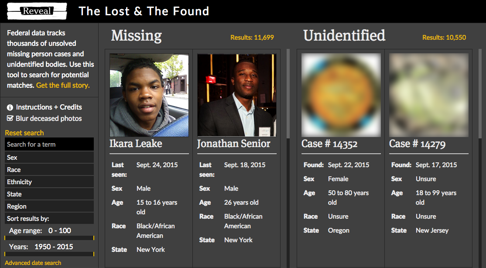

The Seventh Month
The view from my hotel room in BA!
Month No. 7 included a trip to Buenos Aires, a workshop, a keynote, a hack week with my fellow fellows, some meetups, a wasted week due to a bad cold (ugh), and lots of planning for an exciting Month No. 8!
Events
The Future of Journalism in a Wikipedia World
Hacks/Hackers Bay Area Meetup
This event brought together a panel of journalists, academics, and "superusers" to discuss the impact, possibilities, and partnership opportunities between Wikipedia and the news industry. Much of the discussion centered on issues related to fact-checking and the credibility of information on Wikipedia. Another hot discussion topic regarded encouraging journalists, as subject-matter experts, to contribute their reporting to Wikipedia articles. Interesting stuff.
Hacks/Hackers Buenos Aires 2015 Media Party
Fellows Hack Week!
The hack week was a lot of fun. Check out this super fun tutorial I put together on animating matrix transformations on SVG elements.
Projects
Published: The Lost & The Found
Check out the project on revealnews.org!
This investigation – a deep dive on U.S. missing and unidentified persons – has been in the works at CIR for years.
"The Lost & The Found" web app has been in development in some form since March or so. It is an application that takes data from NAMUS.gov and repackages it into a simplified search interface so that users can more easily find potential matches among the missing and unidentified records.
My involvement in the project was mostly as a technical advisor. Early in the reporting process, I helped data journalist Emmanuel Martinez write a Python scraper to pull information from the NAMUS site; for the final product, I advised our Google fellow, Allison McCartney, on best practices for front-end web development and debugging. Huge props to Allison, Emmanuel, and our fearless leader Michael Corey for all their work on this project!
News
The next month will be an extraordinarily busy one!
- Audio Hackathon: This American Life is putting on an a makers event to prototype new tools for podcasts. It's being held in Manhattan, and I'm super excited about it. I think there's a lot of room for innovation around audio on the web, and I'm looking forward to seeing what kinds of projects the teams come up with. I'm hoping to pitch a data sonification project, although that might be a stretch depending on the crowd. I'm also really happy that this event is in New York – I was hoping for a chance to get there during my fellowship.
- ONA15: The Online News Association's annual conference is at the end of September in Los Angeles. I haven't had a chance to attend in previous years, so I'm eager to see what it's all about. I think it'll provide good perspective and an opportunity to identify areas where tech for online journalism needs improvement.
- MIT Media Lab Open House: I received a travel grant to go to the Media Lab's open house, so I'll be flying out to Boston immediately after ONA to check it out and connect with the Center for Civic Media.
- Code for America Summit: And just in case I haven't tired of conferences after all that, I'll be attending the CFA Summit in Oakland at the beginning of October. I'm really interested in the overlap between the journalism and civic tech communities, and the speaker lineup for the event looks fabulous.
Lots to learn!